Guía de uso
A continuación, comentaré la guía de uso básica para los usuarios Gestor y Cliente, por separado.
Gestor
Inicio
En primer lugar observamos el menú inicial. Como no podemos crear gestores ya que solo existe uno, iniciamos sesión.
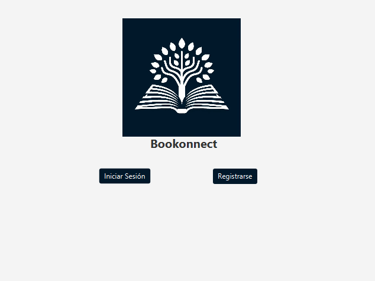
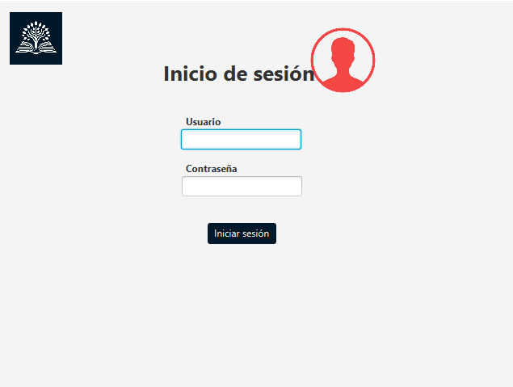
Pantalla principal
Una vez en la pantalla principal vemos un saludo al gestor con el logo corporativo. En el menubar superior vemos Cuenta y Gestión:
En cuenta, nos permite cerrar sesión.
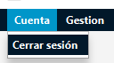
En gestión nos permite trabajar: Añadir, eliminar y editar libros.
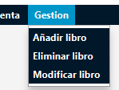
Añadir Libro
Para añadir un libro, solo tenemos que rellenar los datos con los campos correspondientes y darle a añadir, en caso de error seremos notificados.
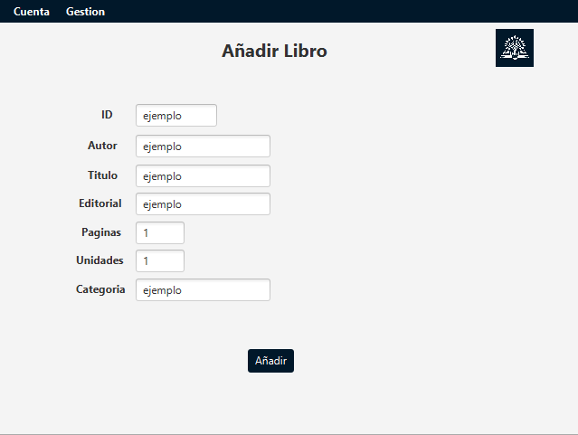
Eliminar Libro
En caso de eliminar el libro, primero seleccionamos el ID del libro a eliminar. Seguidamente, tras mostrarnos los datos de dicho libro, podemos confirmar la eliminación del mismo.
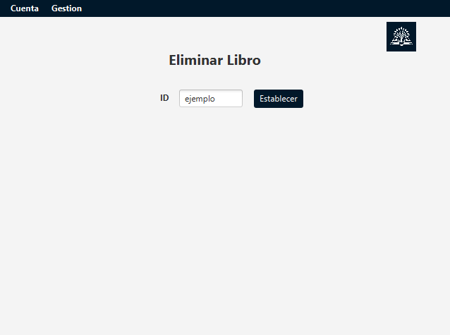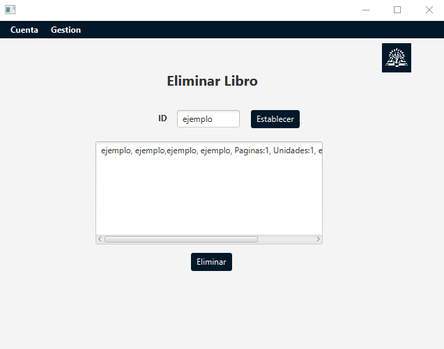
Modificar Libro
El modificar un libro funciona similar, tras filtrar mediante ID nos rellena los campos con los datos del libro y, al darle a editar, los datos que en ese momento estén en los campos serán los que sobreescriban los anteriores.
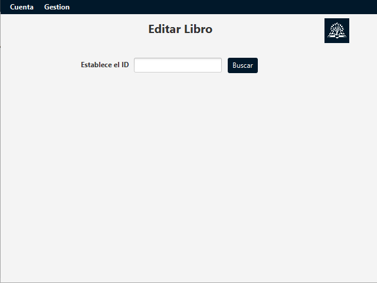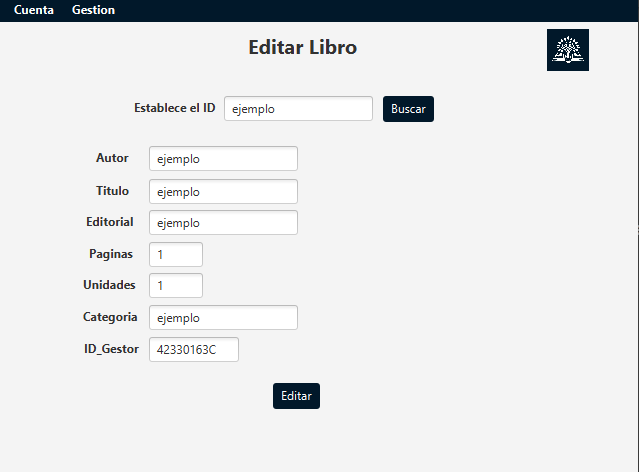
IMPORTANTE
En caso de que hayas agregado un nuevo libro, en vez de cerrar sesión y iniciar la nueva como cliente, recomendamos cerrar la Aplicación y volver a abrirla ya que la lista de categorias se actualiza en cuanto la Aplicación se abre. En caso contrario, no mostrará las nuevas categorias añadidas.
Cliente
Inicio
Ya que el Cliente si puede crear cuenta, nos enfocaremos en ello.
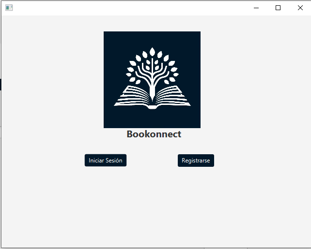
Crear cuenta
Tras rellenar los datos correspondientes, nos permitirá crear un cliente. En caso de error, seremos notificados.
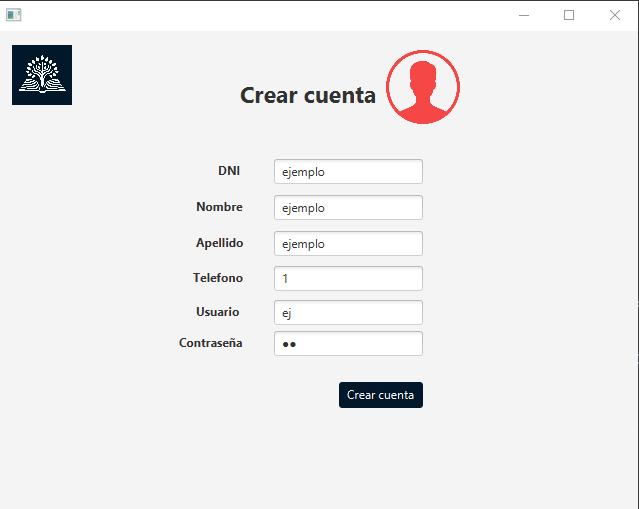
Pantalla Principal
Comprobamos que ahora la pantalla principal ha cambiado, tenemos un botón central para alquilar libros y solo poseemos la sección cuenta en el menubar.
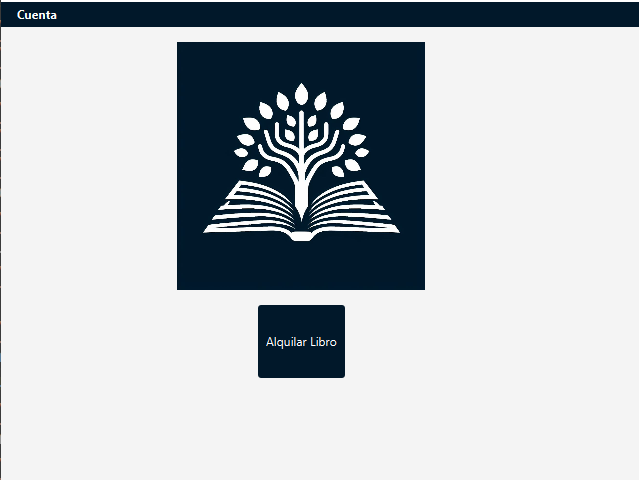
Cambiar Contraseña
Si accedemos a dicha sección veremos nuevos campos: Cambiar Contraseña y Mostrar alquileres. En este caso, al cambiar la contraseña solo deberemos establecer la contraseña actual y acto seguido la nueva, repetida para validar credenciales.
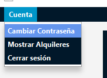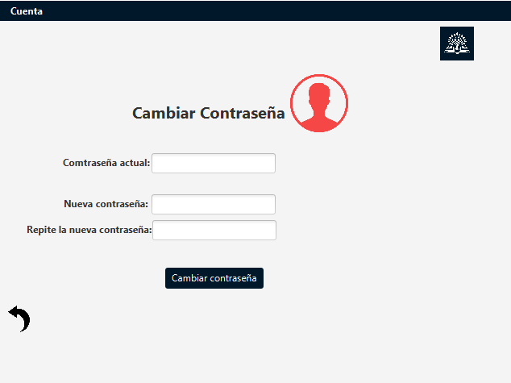
Buscar Libros
Si en el menú principal le damos a alquilar, accedemos al buscador. Ahora, tras seleccionar (o no) una categoría de la cual filtrar, nos mostrarán los libros del resultado de las mismas.
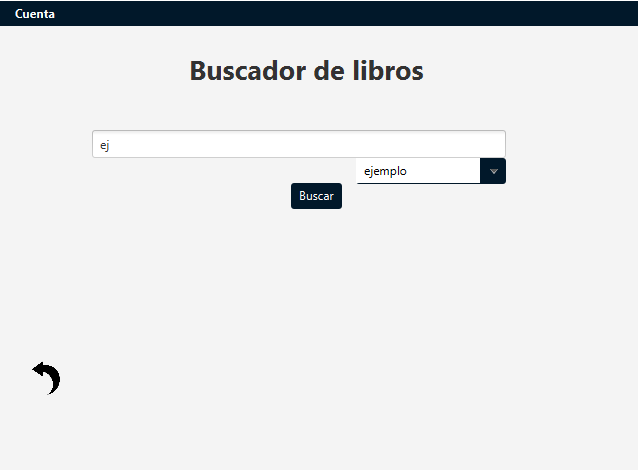
Alquilar
Una vez mostrados los libros, si escribimos el id del mismo en el textfield inferior derecho y presionamos alquilar, alquilaremos el libro establecido en caso de que exista dicho id.
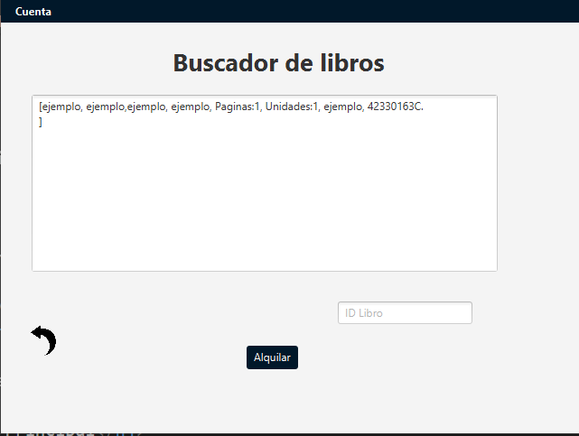
Ver alquileres
Ahora, en la anterior sección de Ver alquileres, si presionamos actualizar nos mostrará la lista de todos los alquileres ligados a nuestra cuenta.
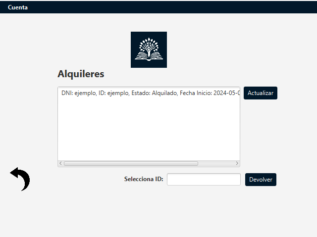
Devolver libro
Podemos observar que el estado de dicho alquiler al ser realizado está estabecido como Alquilado. Para devolverlo debemos escribir el ID del libro en el textfield de abajo a la derecha y acto seguido, presionar devolver. En caso de que dicho ID sea válido, el libro será devuelto y, al actualizar la lista, podremos ver su nuevo estado.
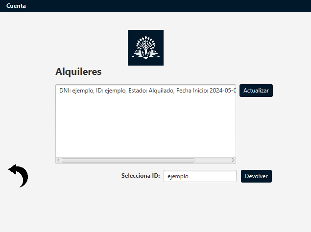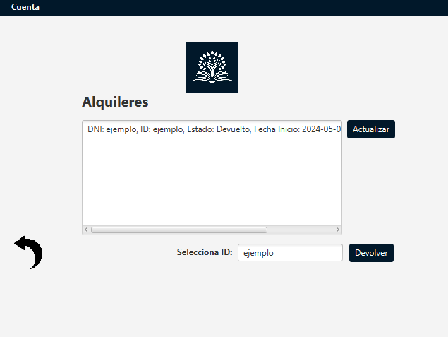